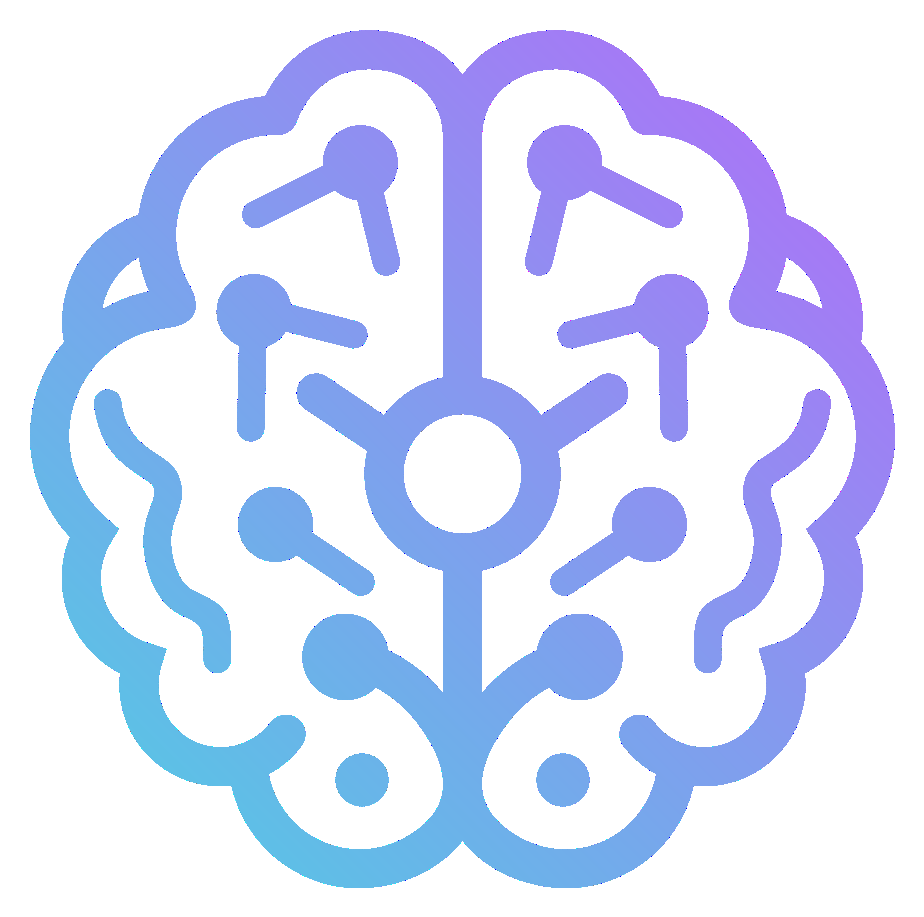
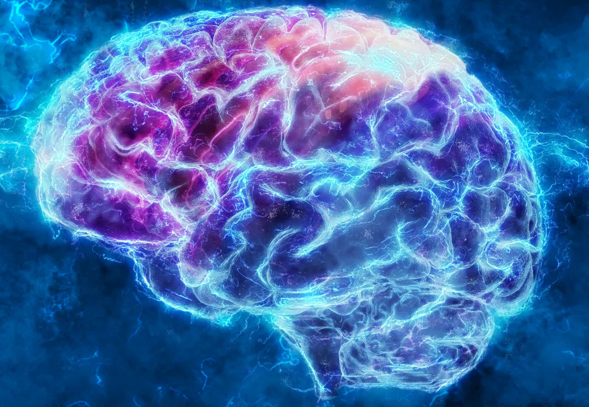

Launching end of 2026The next edition of the Algonauts Project challenge is on its way, launching in November 2026. Sign up to be the first to know when it goes live and to receive updates as details are announced.
Learn More
The 2025 challenge edition focused on explaining responses in the human brain as participants perceive complex multimodal movies. Through collaboration with the Courtois Project on Neuronal Modelling (CNeuroMod), the challenge ran on the largest human brain dataset available, opening new venues for accurate models of neural responses to multimodal naturalistic stimulation. The challenge was organized in partnership with the Conference on Cognitive Computational Neuroscience (CCN).
Explore 2025 Challenge
The 2023 challenge edition focuses on explaining responses in the human brain as participants perceive complex natural visual scenes. Through collaboration with the Natural Scenes Dataset (NSD) team, this challenge runs on the largest suitable brain dataset available, opening new venues for data-hungry modeling. The challenge is organized in partnership with the Conference on Cognitive Computational Neuroscience (CCN)
Explore 2023 ChallengeThe 2021 challenge edition was centered around video perception and event understanding. The challenge focused on explaining responses in the human brain as subjects watched short video clips of everyday events.
Explore 2021 ChallengeThe first challenge edition focused on explaining brain responses as human subjects studied still images of everyday objects.
Explore 2019 Challenge